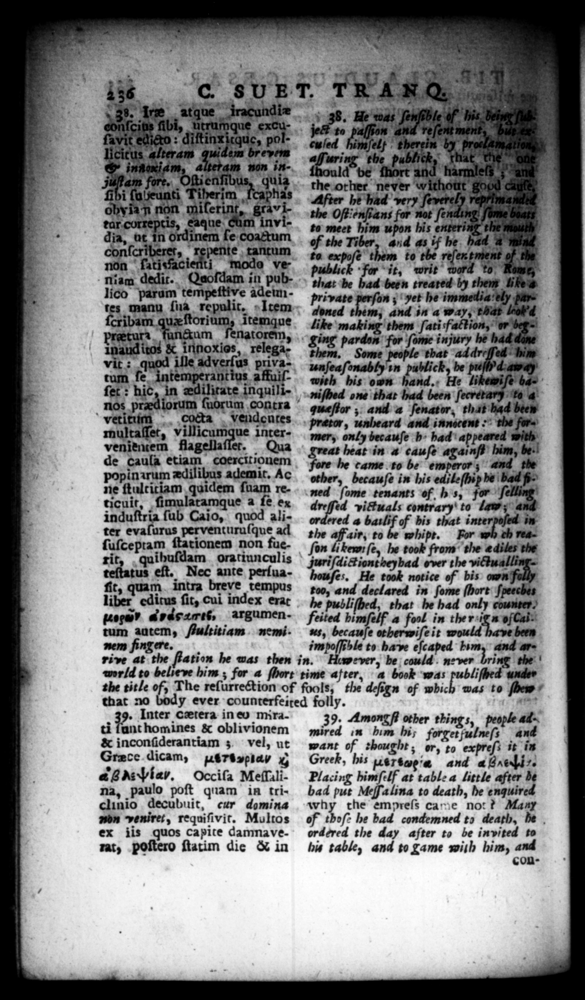

155 8. Ie atque iracaundiz e0? eig fbi, urramque excuſavit edicto: diſtinxicque, polcitus alteram quidem brevem infoxiam, altetam non injut am fore. ne quiz fibi ſubeunti Tiberim ſcaphas obyizn non _miſerint, gravitar correptis, eaque Am invidia, ut in ordinem ſe coactum conſcriberet, repent tantum non © ſativacienti modo ve. niam dedit. Quoſdam in publico parum tempeſtive adenntes manu ſia repulic. Item Rt bam.quezſtorinm, .itemque tura fungum _ Inauditos & innoxios, relegavit: quod ille adverſus privatum ſe intemperant ius affuiſſet: hic, in edilicate inquilinos prædiorum ſuorum contra vetitum cocta Vendentes multaſſet, villicumque intervenientem flagellaſſet. Qua de caula etiam coercitionem popinuum ædilihus ademir, Ac ne ſtultitiam quidem ſuam reticuit, ſimulatamque a fe. ex induſtria ſub Caio, quod aliter evaſurus perventuruſque ad ſuſceptam ſtationem non fue. rit quibuſdam oratiunculis teſtatus eſt. Nec ante perſuafit, quam intra breve tempus liber editus ſit, Cui index erat Loew? Adar. argumentum aatcmy ftultitiam nem nem fing ere. rive at the ft world to believe him; for a t time after, ' a book 'w the title of, The — ors ls, a bi ody ever counterfeited folly. that a0 Inter cœtera in eo mirati unt homines & oblivionem & inconſiderantiam; vel, ut Grace dicam, nertspia x 4 g αννναα . Occiſa Meſſalina, paulo poſt quam in trichaio decubuit, cur domina bn veniret, requiſivit. Multos ex iis quos capice damnaverat, poſtero ſtatim die & in C. 8U E T. enatorem, | ation he was then in. However, be could. never bri wh * „ - 52 C * $44 A ; R A N Q. i 38. He was ſenſible of his. bein (us to 2 5 Er flee” 72 cu ſed himſelf therein e the publick, that che "ane uld be ſhort and harmleſs ;-ane the other never without good ont by proclamationg." After he had very ſeverely reptimantds the Oftienſians for not ſending; ſame Goat to meet him upon his entering the mauth” of the Tiber, and as if he had = and to expoſe thy to the ſep publick for it, writ ward to Rowe,” that be bad been treated by them likes n; yet he immetlia'ely par. pri vate perſo © doned 2 and in a way, that H like making them ſati faction, or bg. Ling pardon for ſome injury he had dane — _ ple — ad dr. » him unſea in ck, be aw r Alert . niſbed one that had been ſecretary d a queſtor , and a ſenator, that had been | pretor, unheard and innocent the former, only becauſe h had appeared with at heat in 4 cauſe agaluſ him, be. he came to be emperor; and ide other, becauſe in bis edileſhip be Bl g. ned ſome tenants ef h s, for ſelling 4 — victuals contrary to lam; ered 4 bailif of his that interpoſed in the aff air, to be whipt. For wh th reaſon Ii kemi ſe, he took from the ediles the Juriſditiontheybad over the victuallinghouſes, He took notice of bis o fall too, and declared in ſome (hort ſpeeches he publiſhed, that he had only counter. feited himſelf a fool in the rig n ofCaines, becauſe otherwiſe it would have been impoſſible to have eſcaped him, and = "1 liſhed unde: the deſign of which was to ſhew / 39. Amongſt other things, people ad. mired in him hi; forgeratnifs and want of thought, or, to expreſs it in Greek, his Uersegis and a Hit Placing himſelf at table a little after be bad put Meſſalina to death, he enquired the empreſs care no: ? Many of thoſe he bad condemned to death, be ordered the day after to be invited to his table, and to game with him, and con
